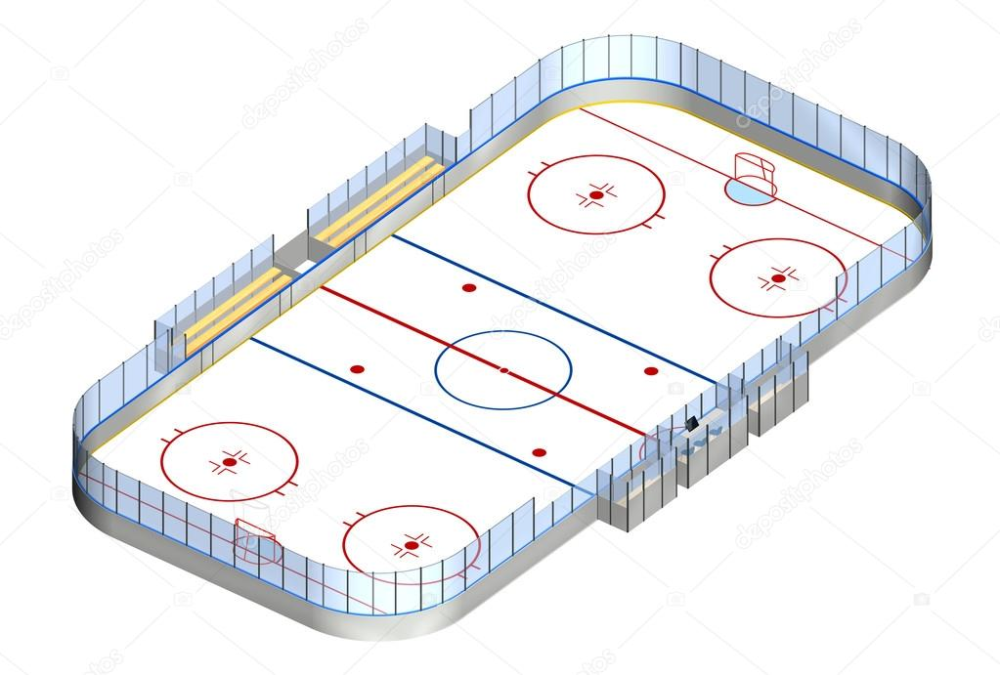
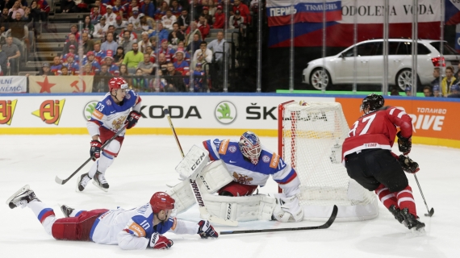
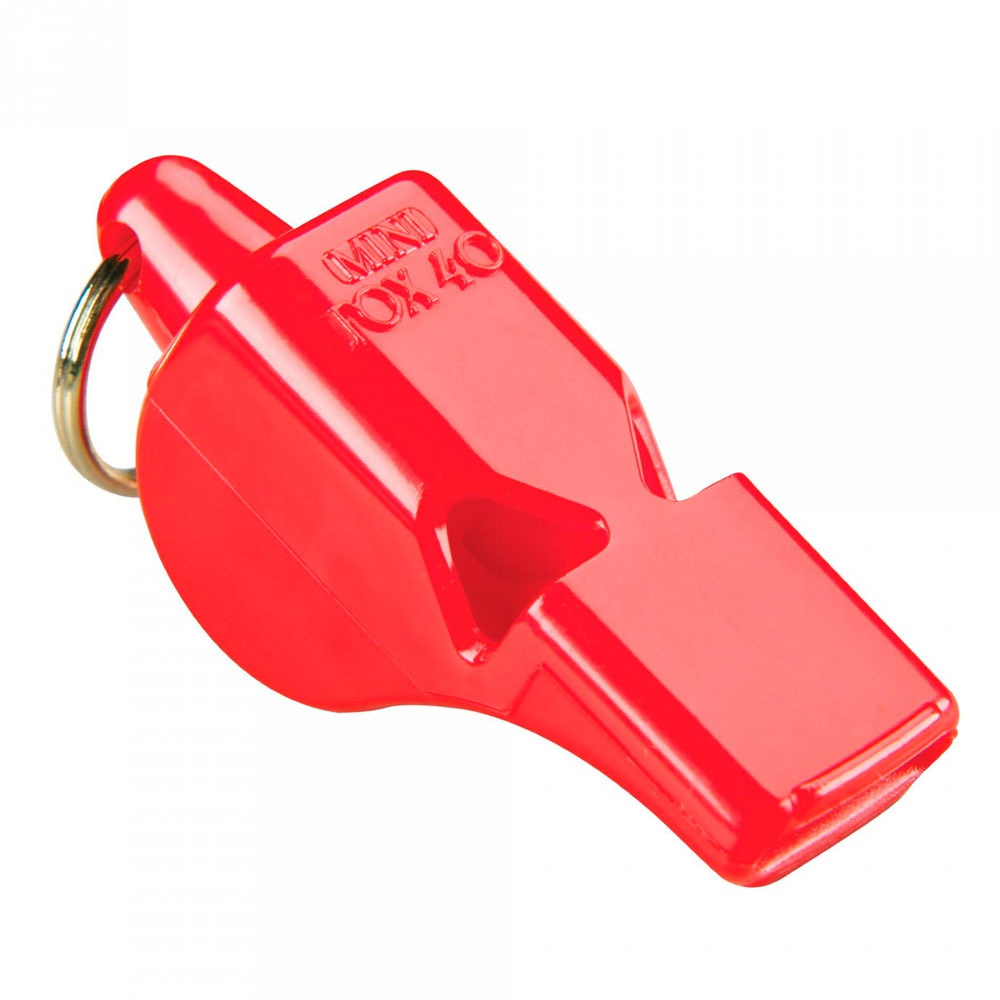
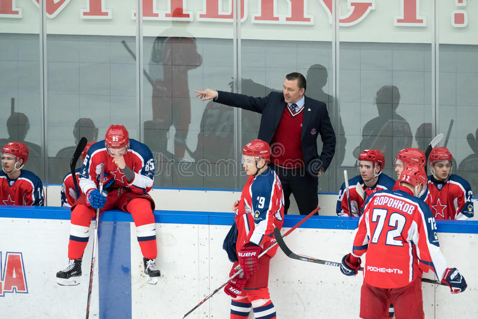
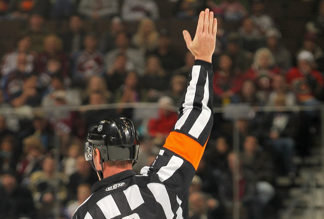
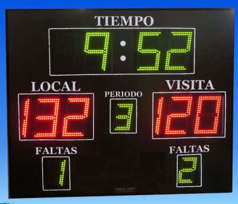

Óscar Poblete Sáenz 00426099

Un rectángulo con esquinas ovaladas que mide 60.96 metros (200 pies) de largo y 25.9 metros (85 pies) de ancho. La pista está dividida en tres zonas, defensiva, neutral y ofensiva. La zona neutral es la zona del centro que está entre las dos líneas azules. La línea roja del centro de la pista divide la zona neutral en dos.

Cada equipo forma con seis jugadores: un portero más cinco patinadores (dos defensas, dos alas y un centro).

En la temporada regular de la NHL, un partido tiene una duración de 60 minutos de acción, los cuales se dividen en tres períodos de 20 minutos cada uno. Si después de los 60 minutos el marcador está empatado, se jugará un alargue de cinco minutos de acción de muerte súbita, o sea el que mete gol gana. Si el empate persiste después del sobretiempo de cinco minutos, el juego será declarado un empate y ambos equipos se llevarán un punto en la tabla.
En la post-temporada no hay empates, entonces los alargues continúan siendo de muerte súbita, pero los períodos de juego continúan siendo de 20 minutos de acción. El partido no se termina hasta que alguien anote, no importa cuantos períodos adicionales se requieran.

No hay limite en el número de cambios en el partido, los cambios se hacen cuando la jugada se detiene al sonar el silbato del árbitro, o sobre la marcha mientras el disco esté en juego.

Si se da el caso de un castigo menor (dos minutos) o mayor (cinco o 10 minutos dependiendo de la infracción), el equipo castigado tendrá que jugar sin el jugador que cometió la infracción. En el caso de que se castigue a más de un jugador al mismo tiempo o durante el castigo inicial, los jugadores castigados tendrán que servir sus castigos al mismo tiempo.
Un equipo tiene que tener un mínimo de tres patinadores en la pista en todo momento. Si tienen tres o más jugadores castigados, el tiempo de castigo del último jugador infraccionado no comenzará a correr hasta que se termine el tiempo de infraccion del primer jugador penalizado.
El último jugador castigado tendrá que ir a la caja de castigos para esperar que comience y termine su castigo. Un castigo menor termina cuando se acaben los dos minutos de juego, o antes si su equipo recibe un gol encontra. Un castigo mayor no se termina con la anotación de un gol del equipo contrario, si no sólo hasta que se cumpla el tiempo de la infracción, no importa cuantos goles reciba su equipo.
Si un portero recibe un castigo (excepto expulsión del partido), un jugador que estaba en la pista en el momento de la infracción, iría a la caja de castigo a servir la infracción del guardameta que sí se quedaría en la pista jugando su posición.

Por equipo: Dos puntos por un triunfo, uno por empate, cero por derrota.
Individual: Un punto por gol anotado o por asistencia. Se le acredita una asistencia a los dos últimos jugadores del equipo atacante que tocaron el disco antes del jugador que mete el gol.
Información recuperada el 16/10/20 de: ESPN